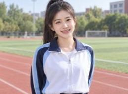

把「亚洲人物照」
生成得像拍的，不像生成的。
一个专注亚洲人物肖像与合影的生成 Skill。五类人物模式，默认 4:3 画幅、简洁背景、完整露头。 内置负向防呆与 8 项质量验收，专门治理塑料皮肤、裁切头顶、手部畸形、复制粘贴式笑容这些 AI 通病。
生成样例
同一套规则，五种人物
以下图片全部由本 Skill 的规则驱动生成。点击任意一张可放大查看细节——重点看皮肤纹理、发丝、年龄纹和手部。
中青年女性 · 运动风
浅色背景棚拍，清爽露齿笑，自然半身构图。

中青年女性 · 运动场
户外跑道场景，运动装配色，背景虚化保留天空层次。
中青年男性 · 棚拍
浅蓝衬衫，正面略侧，温和表情，眼神光自然。
中青年女性 · 口腔场景
医疗场景，牙齿自然亮白，不做荧光白广告牙。
中青年双人合影
男女并肩靠肩，两张脸都清晰，表情有细微差异。
中老年双人 · 户外
公园场景，年龄感协调，不做过度年轻化。
中老年双人 · 居家
窗边自然光，毛衣配开衫，牵手表现温馨陪伴。
中老年双人 · 针织
室内暖光，深色针织配粉色开衫，轻扶肩膀。
儿童 · 积木场景
室内地板场景，姿态活泼符合年龄，无成人化。
模式路由
先判模式，再填字段
Skill 会先把请求归入五类之一，再套用对应的人物规范。用户明确指定的年龄、人数、关系、场景，永远优先于默认值。
中青年单人
默认 19–40 岁。面孔清爽自然，发型整洁，健康自信。单人通常直视镜头，正面或三分之二侧身。需要突出牙齿时用真实健康亮白，保留牙缝与切端透明感。
中青年双人
重点表现关系而非两张脸的堆叠：并肩、轻扶手臂、自然依偎。两人的笑容、眼神和姿势必须有细微差异，拒绝复制粘贴式表情。
中老年单人
默认 50–75 岁。重点表现精神好、健康、亲切，不表现病弱憔悴。保留与年龄相符的眼角纹、法令纹和手部质感，但不用夸张皱纹代替真实年龄感。
中老年双人
夫妻或亲人陪伴，两人年龄感必须协调、处于同一生活阶段。女性不能被生成得过于年轻，否则会破坏关系的可信度。互动用轻扶肩膀、靠肩、牵手。
儿童人物
年龄必须符合用户要求。重点表现天真、健康、活泼、好奇。不用成人化妆、成人姿态、成熟服装或暧昧表达。牙齿保持符合年龄的自然状态。
明确不做的事
不生成海报、广告文案、复杂排版、产品设计、Logo、插画或与人物无关的风景。它只负责干净的人物照片——文案和版式请交给设计工具。
核心规则
哪些锁死，哪些放开
Skill 把字段分成两类：默认稳定的保证质量基线，默认可变的给创作留空间。冲突时按「用户明确要求 > 参考图可辨识特征 > 模式规范 > 统一默认值」处理。
✓默认稳定（锁死）
- 亚洲人物方向、用户指定的年龄段
- 人物数量与人物关系
- 4:3 画幅
- 头部完整露出，保留头顶空间
- 简洁低干扰背景
- 人物优先构图（近景 / 胸像 / 自然半身）
- 中老年女性深色或深灰发为主，仅少量白发
✕默认可变（放开）
- 具体脸型、五官比例、肤色深浅
- 发型、发长、发色与人物身份
- 服装颜色、材质、季节、职业、生活场景
- 站姿、坐姿、头部角度、手势、人际距离
- 笑容强度、视线方向、细微不对称
✕负向防呆（默认排除）
- 文字、乱码、字幕、标题、Logo、水印、签名
- 边框、海报版式、拼图、多宫格、分屏、UI 元素
- 欧美或非指定地区的面孔
- 年龄错位、人物数量错误
- 额外背景人物抢主体
- 裁切头顶、裁切下巴
- 脸部被头发完全遮住、道具遮挡五官
- 多余手指、手部融化、额外肢体
- 脸部重影、眼睛数量错误、牙齿数量错误
- 身体互相穿插
- 塑料皮肤、蜡像脸、过度磨皮
- 荧光白牙、统一模板笑容、过度对称
- 重复脸、复制粘贴式人物
- 过饱和花纹、融化的衣服
- 错误季节服装、无来源高光、平光
- 脏色偏、过度 HDR
- 中老年人物病弱、憔悴或过度衰老
- 中老年女性满头白发（除明确要求）
- 儿童成人化、过度化妆、成熟姿态
- 浓重电影感、夸张逆光、强烈胶片颗粒
- 时尚大片风（默认不用）
✓生成后逐项验收
出现明显失败时只针对失败字段做一次定向修正——例如「只修复头部裁切」「只修复手部」「只降低皮肤磨皮感」。绝不在修复时同时改变年龄、人物关系、服装和场景。
直接可用
复制就能跑的调用示例
点击右上角按钮复制。把方括号字段换成你的实际要求，未填写的字段会自动用 Skill 默认值补齐。
中老年双人 · 居家
使用 $studio-portrait-master，生成一张4:3的中老年亚洲夫妻合影，秋季针织服装，女性深色头发中只有少量白发，室内窗边自然光，牵手或轻扶肩膀，温馨自然，简单背景，头部完整露出，表现健康幸福。
中青年单人 · 清爽
使用 $studio-portrait-master，生成一张4:3的24岁左右东亚女性单人肖像，直视镜头，自然微笑，薄荷绿开衫和米白长裙，春日户外柔和日光，完整露出头部和下巴，清甜自然，真实皮肤纹理。
儿童 · 公园
使用 $studio-portrait-master，生成一张4:3的6岁亚洲男孩照片，夏季公园，明亮自然光，动作和服装符合儿童年龄，天真活泼，不能成人化，头部完整露出，简单背景。
中青年双人 · 春季
使用 $studio-portrait-master，生成一张4:3的中青年亚洲情侣合影，春天公园，女生浅色长裙，男生休闲衬衫，并肩靠肩自然互动，两张脸都清晰，表情有细微差异，简单背景，头部完整露出。
中老年单人 · 健康形象
使用 $studio-portrait-master，生成一张4:3的62岁亚洲男性单人肖像，深色短发少量白发，浅色衬衫，中性干净背景，温和微笑，保留眼角纹和法令纹，精神健康亲切，头部完整露出。
定向修正（修失败点）
保留当前图片的人物身份、年龄、服装、场景、关系和构图，只修改：头顶被裁切。头部完整露出，保持4:3、亚洲人物和简单背景。不要改变其他内容，不增加文字、Logo、水印、额外人物或排版。
安装
三步启用
Skill 就是一个带 SKILL.md 的文件夹。复制到技能目录、重开应用、调用。
复制文件夹
把整个 studio-portrait-master 文件夹复制到技能目录，确保 SKILL.md 在文件夹根部。
重新加载
重新打开 Codex 或当前 Agent 应用。新技能没出现在列表时，优先重启应用。
调用
输入 $studio-portrait-master，或直接用自然语言描述人物需求，系统会自动匹配。
| Agent | 技能目录 |
|---|---|
| Codex（Windows） | %USERPROFILE%\.codex\skills\studio-portrait-master |
| Codex（macOS / Linux） | ~/.codex/skills/studio-portrait-master |
| Claude Code | ~/.claude/skills/studio-portrait-master |
| 团队共享 | 放入项目的 .codex/skills/，或打包为团队插件 |
FAQ
常见问题
调用后没有反应？
确认目录名是 studio-portrait-master、文件是 SKILL.md 且位于文件夹根部，然后重启应用。目录层级多包了一层是最常见的原因。
为什么人物长相每次都不一样？
这是默认行为——长相、发型、肤色都属于「默认可变」字段。需要保持同一个人时，在请求里加「保持上一张人物一致」或「同一个人」，并提供参考图。
为什么默认不是全身图？
本 Skill 是人物优先，默认近景、胸像或自然半身，因为人脸细节和关系表现才是重点。需要全身时直接写「全身构图」即可覆盖默认。
能生成带文字的海报吗？
不能，这不在范围内。Skill 只输出干净的人物照片，负向约束里明确排除文字、Logo、水印和海报版式。要排版请把人物层导进 Figma / Photoshop 再合成。
用参考图时怎么防止它抄走版式？
明确说明只参考人物：参考这张图中的人物面孔、年龄感、发型和表现方式，不要复制其中的文字、Logo、卡片、图标、海报排版或背景设计。参考图只在授权范围内提取人物特征，不复制文字与版式。
生成的图有 AI 感，怎么修？
不要重新生成整张。用定向修正模板，只改失败的那一个字段，比如「只降低皮肤磨皮感」「只把头发改成有发束感」「只修复手部」。一次只修一项，避免牵动年龄、服装和场景。
儿童照片怎么避免成人化？
在请求里写明具体年龄，并加上「动作和服装符合儿童年龄，不能成人化」。Skill 的儿童规范会排除成人化妆、成熟姿态和暧昧表达，牙齿也只做符合年龄的自然状态。